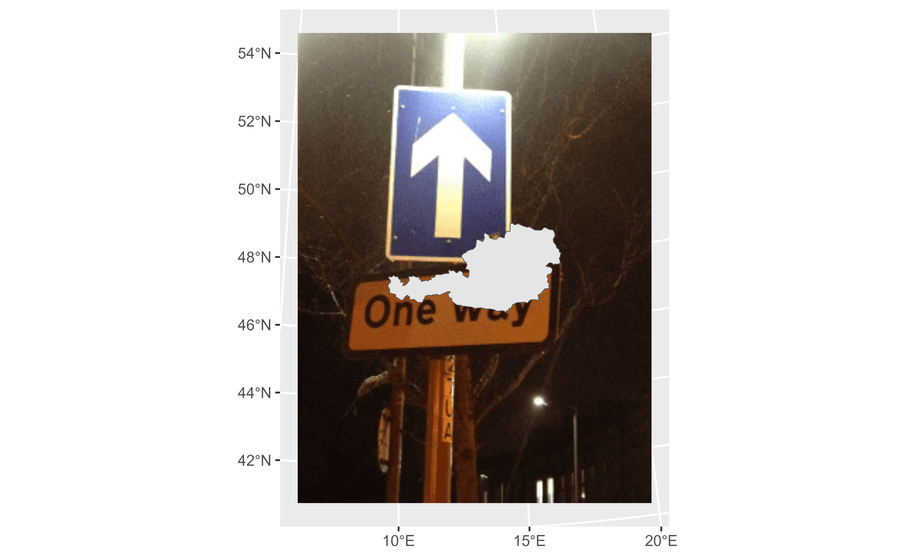
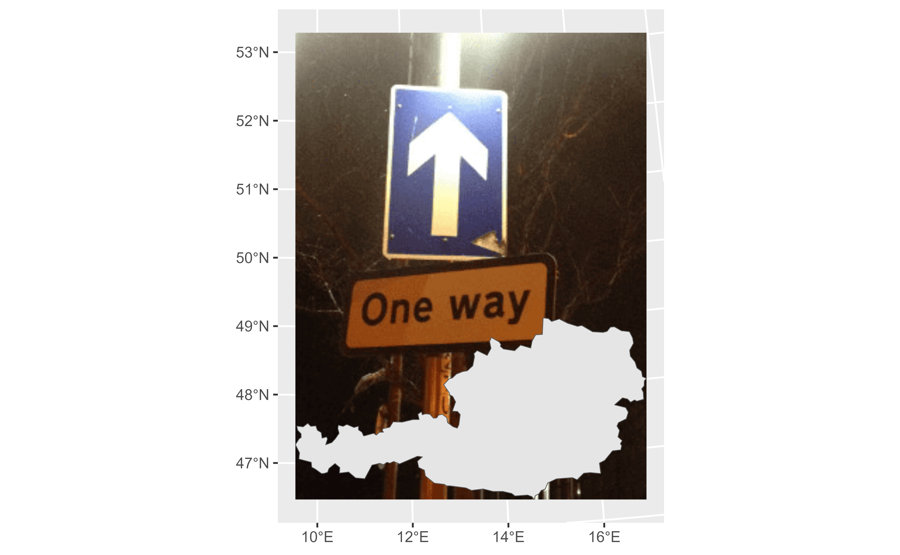
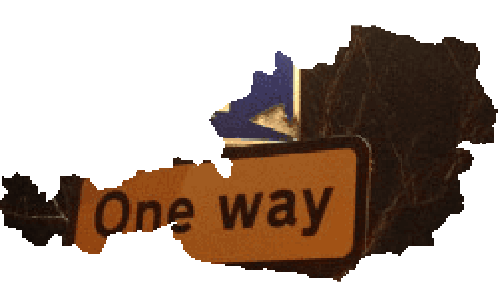

Starting with rasterpic is very easy! You just need
a image (png, jpeg/jpg or
tif/tiff) and a spatial object from the sf
or the terra package to start using it.
Basic usage
We use here as an example the shape of Austria:
library(sf)
library(terra)
library(rasterpic)
# Plot
library(tidyterra)
library(ggplot2)
# Shape and image
x <- read_sf(system.file("gpkg/austria.gpkg", package = "rasterpic"))
img <- system.file("img/vertical.png", package = "rasterpic")
# Create!
default <- rasterpic_img(x, img)
autoplot(default) +
geom_sf(data = x)
Options
The function provides several options for expanding, alignment and cropping.
Expand
With this option the image is zoomed out of the spatial object:
expand <- rasterpic_img(x, img, expand = 1)
autoplot(expand) +
geom_sf(data = x)
Alignment
Decide where to align the image:
bottom <- rasterpic_img(x, img, valign = 0)
autoplot(bottom) +
geom_sf(data = x)
Crop and mask
Create impressive maps!:
mask <- rasterpic_img(x, img, crop = TRUE, mask = TRUE)
autoplot(mask)
maskinverse <- rasterpic_img(x, img, crop = TRUE, mask = TRUE, inverse = TRUE)
autoplot(maskinverse)